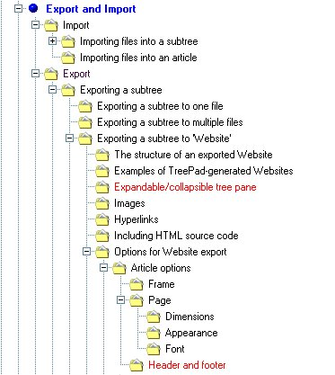
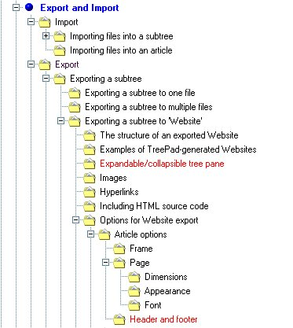

TreePad Business Edition
Heading
-
Heading TreePad Business Edition. Version 7.1.2. Almere, the Netherlands: Freebyte.com, 2004. Euro 35.95 $43.95 [Trial software downloadable from http://www.treepad.com/] Introduction
-
Introduction I reviewed an early version of TreePad in 1999 when I described it as 'a really simple Personal Information Manager'. And so it was: it was pretty intuitive, simple to get to know and simple to use, and a later version is still available as freeware in the shape of TreePad Lite. That version is till very close to what was reviewed and anyone who wants a tree-structured information organizer will find it very useful indeed.However, TreePad has moved on a long way from 1999: there are now, by my count, eight versions of TreePad, including the two freeware programs, plus the free TreePad Viewer (enabling you to send someone a read-only TreePad file) and exe-eBook creater, which, as the name suggests, enables you to turn a TreePad database into an electronic book. (Of which, more later.)The eight versions range from the simple, Lite version (with an 'Asia' version with multi-language capabilities) to the TreePad Enterprise Multi-user version. All are amazingly competitively priced, the version reviewed here is only Euro 35.95, TreePad PLUS is only Euro 24.95 and even the Enterprise version which allows databases up to 256 Gb in size is only Euro 73.95. The multi-user version has a rather more complex pricing structure. What is it?
-
What is it? So, what is TreePad? Well, you probably know the Indian fable of the blind men and the elephant, in which each of eight blind men described an elephant in very different ways, depending upon which part of the animal they happened to come into contact with. TreePad is a little like that. From one point of view it is a tree-structured, free-format database for text documents. From another, it is a means of storing and organizing images. From another, it is a personal organizer based on a calendar structure, or a To-do list. Or an outliner and information store for developing a paper or a thesis. From another perspective it is a generator of HTML pages, and even of entire Websites. In other words, probably the best thing we can say about it is that it is an extremely flexible and extremely powerful program for information management - personal or corporate. Oh, yes - it is also a fully functional word-processor. I am writing this review using TreePad, and we'll see what can be done with it. How does it work?
-
How does it work? In conception, TreePad is very simple. The working area consists of two main panes: on the left, the tree structure, which you design yourself - there is no automatic construction of taxonomies here - and on the right the area in which you write the text relating to the nodes in the tree. The figure below illustrates this. The editing buttons above the main work area are much more comprehensive in scope than in the original version, and many of them will be recognizable to anyone familiar with Windows software, but in the centre row there are some TreePad-specific buttons for managing the tree - just to the right of the open book, the thesaurus button.You proceed by defining your database in the root node (here it is called 'Review') and then naming appropriately the 'children' of that 'parent' node. I have chosen to use as child nodes, the successive sections of the review. A child node, of course, can be a parent node and so on, ad infinitum. As long as what you need to organize can be structured in this way, the process is quite straightforward. You can import images, as I have done here, you can point to Web sources, and you can import any kind of text you wish. You can also insert the date, or date and time: Thu Feb-17-2005 20:44, a calendar for the day, week, month or year, or a to-do list. At any point in the production of a database you can also insert a table of contents at the root node (or anywhere else) which is hyperlinked to the appropriate node.[Insert figure when review is finished]Simple. But, of course, the tree structure can be as complex as serves your needs. For example, here is the structure of part of the TreePad manual, which, of course, comes as a TreePad database:You will see that 'Font' is seven levels down from 'Export and Import', and it is actually nine levels down from the root node. The figure also illustrates the flexibility of the 'export' function.The 'article' in the right pane can be either a simple 'text' file, or a 'rich text format' file. The former results in smaller files, the latter gives the flexibility of changing type styles, using colour, etc. And producing an article is as straightforward as using a word-processor, most of the Word keyboard shortcuts function, for example, Ctrl+I to start and finish italic, and Ctrl+B for bold.
The editing buttons above the main work area are much more comprehensive in scope than in the original version, and many of them will be recognizable to anyone familiar with Windows software, but in the centre row there are some TreePad-specific buttons for managing the tree - just to the right of the open book, the thesaurus button.You proceed by defining your database in the root node (here it is called 'Review') and then naming appropriately the 'children' of that 'parent' node. I have chosen to use as child nodes, the successive sections of the review. A child node, of course, can be a parent node and so on, ad infinitum. As long as what you need to organize can be structured in this way, the process is quite straightforward. You can import images, as I have done here, you can point to Web sources, and you can import any kind of text you wish. You can also insert the date, or date and time: Thu Feb-17-2005 20:44, a calendar for the day, week, month or year, or a to-do list. At any point in the production of a database you can also insert a table of contents at the root node (or anywhere else) which is hyperlinked to the appropriate node.[Insert figure when review is finished]Simple. But, of course, the tree structure can be as complex as serves your needs. For example, here is the structure of part of the TreePad manual, which, of course, comes as a TreePad database:You will see that 'Font' is seven levels down from 'Export and Import', and it is actually nine levels down from the root node. The figure also illustrates the flexibility of the 'export' function.The 'article' in the right pane can be either a simple 'text' file, or a 'rich text format' file. The former results in smaller files, the latter gives the flexibility of changing type styles, using colour, etc. And producing an article is as straightforward as using a word-processor, most of the Word keyboard shortcuts function, for example, Ctrl+I to start and finish italic, and Ctrl+B for bold.Presentation mode
-
Presentation mode Rather surprisingly, TreePad can also be used to make presentations by adopting the full-screen mode. You could create a presentation where each node is the equivalent of a PowerPoint slide and use full-screen mode to make a presentation. The results will be as polished as you care to make them, since TreePad will happily accommodate images. You can leave the tree on-screen and use it to navigate through the presentation. In the case of complex presentations, this could be extremely useful.
Hyperlinking
-
Hyperlinking Internal hyperlinks were a feature of TreePad in 1999, but since then, the Web has really taken off and TreePad has developed the use of hyperlinks considerably. In fact, just about every use imaginable is found for them. For example, you can create hyperlinked bookmarks for frequently used articles in the database. For example, one article may be your to-do list and you may want to keep jumping backwards and forwards to the list. You can also use hyperlinks to create cross-references: this is useful because the tree structure can show only one mode of classification for the database and your articles may relate to more than one topic in the tree. Rather than repeat the article under a node, you can simply cross reference, for example, from here to What is it?.You can also use hyperlinks to launch external documents from TreePad - this was done in the Introduction, and you can also launch other applications this way. The ways of using hyperlinks can appear rather complex and the manual has a list of forty-five nodes on the subject, so this review cannot really do full justice to the topic. However, you can always download the trial version and take a look at the manual that comes along with it. Exporting
-
Exporting The export function is pretty comprehensive: you can export a database as a .tpd database (that is, a TreePad database) or as an .hjt database (the format used in earlier versions), or as a single or multiple rich text format file, or as XML, or as an HTML file, or a plain text (.txt) file, or, with an add-on, an e-book. Exporting is very simple: just click on File->Export->Subtree and choose whether to export to a file or a Website.RTF files
-
RTF files Probably the most common need will be to export to a word-processor by using the .rtf file transfer process. You can export the whole database to a single file, or to have separate files for the articles in the database. The figure below shows what the output looks like when imported into Word:
Websites
-
Websites Creating a Website from a TreePad database is equally simple. File->Export->Subtree->To Website leads to a pop-up menu that allows you to format the Webpage. I think this is essential, because the default page setup assumes full-screen use of the browser and the settings may be absolute (frame width in pixels) or relative (percentage of browser width). The process is rapid: it took only about six seconds to produce a Website for this review, up to this point. The figure below shows a page from the site: You can view the final form of the site here...
You can view the final form of the site here... e-Books
-
e-Books A TreePad e-book is simply the database exported as a .exe file, which is read-only. This means, for example, that you can share the results of your work with others, but deny them the possibility of tampering with it. Of course, others will be able to cut and paste from your e-book into their own databases, but presumably that is part of the point of sharing information!. If you click here, you will launch an e-book version of this review.
There is potential here for using TreePad as a generator of learning materials for e-learning or distance learning generally - or even simply for producing and circulating course notes. Your material could be made interactive, to a limited degree, by including 'mailto' hyperlinks and the student could copy and paste from the e-book into their own TreePad database for a course, along with their e-mail messages and your replies. Not quite as sophisticated as a genuine e-learning tool such as Blackboard, but perhaps a low-priced alternative for many.
The add-in for this is downloaded from the TreePad Website and it does not need to be installed - I simply put it into my TreePad directory and created a short-cut for the desktop.
Conclusion
-
Conclusion TreePad has come a long way since 1999 and it is now quite a polished product. And when one considers that Microsoft is asking for $99.00 for its OneNote package for functions that are less complete than those in TreePad, it is also a bargain.TreePad has all kinds of uses, whether by an individual or a work-group. A full list of all the features can be found on the Website, and they include (apart from what has been presented in this review): encryption for pages where you keep confidential information such as passwords and PINs; auto-dialling of phone numbers; templates (for such things as to-do lists, calendars, etc.); a powerful search function, which will search either the tree or the articles, or both, or within a single article; spellchecker in 20 languages; thesaurus, etc., etc., etc.As you might imagine, with this degree of flexibility the uses to which TreePad can be put is enormous: the manual lists the following,Personal information manager
Personal database
Storing notes
Study tool
Office on a floppy
Documentation tool
Easy Intranet-site generation tool
Instant Website generation tool
To-do list manager
Linguistics teaching
Electronic Photo Album
Brainstorming
Web site construction and generation
HTML page generation
Distributing structured information
Diary
Developing books, tutorials, articles using the tree structure as a hierarchical ordering
Genealogy
Storing research Notes
Storing programming code fragments
Storing technical information
Storing emails
Storing URLs
Helpdesk information system listing problems and their solution ordered by categories (subtrees) and searchable by keyword.
Tracking construction jobs in Building projects
Storing car part numbers
Organizing and storing poetry
Database for customer contact information in car furnishing business
Database of technical data of different car models used by a car magazine
Structured and searchable documentation accessible by multiple users
Tool for construction, ordering and storage of sermons
Storing address information
Storing contact informationAs the manual says, 'No doubt you can think of more!'Professor T.D. WilsonEditor-in-Chief